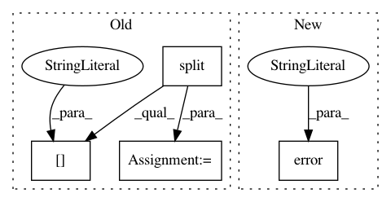

de336139770c6e9e035c0e402375efda48d75301,tensorflow/python/distribute/multi_process_lib.py,,_set_spawn_exe_path,#,89
Before Change
// -> tensorflow/python/my_test
path_to_use = None
guess_path = sys.argv[0][:-3]
guess_path = guess_path.split(os.sep)
for path_reduction in range(-1, -len(guess_path), -1):
possible_path = os.sep.join(guess_path[:path_reduction] +
[guess_path[-1]])
if os.access(possible_path, os.X_OK):
path_to_use = possible_path
break
// The binary can possibly have _gpu suffix.
possible_path += "_gpu"
if os.access(possible_path, os.X_OK):
path_to_use = possible_path
break
if path_to_use is None:
raise RuntimeError("Cannot determine binary path")
sys.argv[0] = path_to_use
// Note that this sets the executable for *all* contexts.
After Change
if os.access(possible_path, os.X_OK):
path = possible_path
if path is None:
logging.error(
"Cannot determine binary path. sys.argv[0]=%s os.environ=%s",
sys.argv[0], os.environ)
raise RuntimeError("Cannot determine binary path")
sys.argv[0] = path
// Note that this sets the executable for *all* contexts.
multiprocessing.get_context().set_executable(sys.argv[0])
In pattern: SUPERPATTERN
Frequency: 4
Non-data size: 4
Instances
Project Name: tensorflow/tensorflow
Commit Name: de336139770c6e9e035c0e402375efda48d75301
Time: 2020-11-18
Author: crccw@google.com
File Name: tensorflow/python/distribute/multi_process_lib.py
Class Name:
Method Name: _set_spawn_exe_path
Project Name: cve-search/cve-search
Commit Name: 0f2d4db89845b9fe748bb8df19c166ebc937c930
Time: 2020-08-11
Author: paul.tikken@gmail.com
File Name: sbin/db_mgmt_cpe_dictionary.py
Class Name: CPEDownloads
Method Name: download_site
Project Name: cve-search/cve-search
Commit Name: 0f2d4db89845b9fe748bb8df19c166ebc937c930
Time: 2020-08-11
Author: paul.tikken@gmail.com
File Name: sbin/db_mgmt_json.py
Class Name: CVEDownloads
Method Name: download_site
Project Name: tensorflow/tensorflow
Commit Name: 448e080c752a1b5f54c422401b41e824b0274a91
Time: 2020-11-17
Author: crccw@google.com
File Name: tensorflow/python/distribute/multi_process_lib.py
Class Name:
Method Name: _set_spawn_exe_path